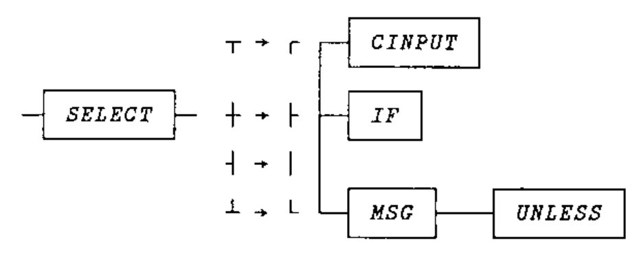

Zark Newsletter Extracts
Vector 16:1, page 42
Transcribed from the printed issue; not yet reviewed. Read it in the PDF of the issue, page 42
Here we are again: another crossword and the solution to the Limbering Up column from last month. After a deluge of comments to the relatively simple problem set in Vector 15.2 and reported in Vector 15.4, we have had no further comments (but see Anne Wilson’s letter on p.10 which arrived after I had written this). Once again, I encourage you all to try and shed new light on these old problems.
Utility Corner: Tree Diagrams¶
(The purpose of this column is to make you more productive by introducing you to utility functions. Think of utility functions as APL functions that have names instead of symbols. By expanding your function vocabulary, you’ll be able to write APL code that’s more concise, more efficient, and more readable.)
In the last issue’s LIMBERING UP column, we asked you to write a function named TREE that draws tree diagrams. The TREE function assumes the existence of three global variables: <names>, <relations>, and <shown>. <names> is a character matrix of the names of the entries in the tree. <relations> is a two-column matrix of indices into <names>, that describes the relations between the entries; the first column is the index of the “parents”, the second column is the index of the “children”. <shown> is a bit vector with one element per row of <names>, telling which entries have already had their children shown. <shown> is both used and updated by TREE.
TREE must be recursive. That is, it must call itself.
Here are some examples of values for the three global variables:
names
EMPLS
SELECT
CINPUT
IF
MSG
UNLESS
ADDEMP
NINPUT
CATEMP
RCAT
DELEMP
SQZEMP
LSTEMP
shown
0 0 0 0 0 0 0 0 0 0 0 0 0
relations
1 2
2 3
2 4
2 5
5 6
1 7
7 3
8 4
8 5
7 4
7 6
7 8
7 5
7 9
9 10
1 13
11 4
11 12
1 11
The right argument of TREE is the index (into <names> and <shown>) of the entry to be displayed, along with its children, and their children, and so on. The result of TREE is a character matrix.
Given the above global variables, here’s an illustration of the use of TREE:
┌────────┐
┌─┤ CINPUT │
│ └────────┘
┌────────┐ │ ┌────┐
┌─┤ SELECT ├─┼─┤ IF │
│ └────────┘ │ └────┘
│ │ ┌─────┐ ┌────────┐
│ └─┤ MSG ├───┤ UNLESS │
│ └─────┘ └────────┘
│ ┌────────┐
│ ┌─┤ CINPUT │
│ │ └────────┘
│ │ ┌────┐
│ ├─┤ IF │
│ │ └────┘
│ │ ┌────────┐
│ ├─┤ UNLESS │
│ │ └────────┘
┌───────┐ │ ┌────────┐ │ ┌────┐
─┤ EMPLS ├─┼─┤ ADDEMP ├─┤ ┌────────┐ ┌─┤ IF │
└───────┘ │ └────────┘ ├─┤ NINPUT ├─┤ └────┘
│ │ └────────┘ │ ┌─────┐
│ │ └─┤ MSG ├─┼
│ │ └─────┘
│ │ ┌─────┐
│ ├─┤ MSG ├─┼
│ │ └─────┘
│ │ ┌────────┐ ┌──────┐
│ └─┤ CATEMP ├───┤ RCAT │
│ └────────┘ └──────┘
│ ┌────────┐
├─┤ LSTEMP │
│ └────────┘
│ ┌────┐
│ ┌────────┐ ┌─┤ IF │
└─┤ DELEMP ├─┤ └────┘
└────────┘ │ ┌────────┐
└─┤ SQZEMP │
└────────┘
(This diagram is a bit different from the one presented in the last issue of Zark APL Tutor News. In particular, extra blanks have been squeezed from short names, and each entry and its corresponding children occupy a rectangular block of space. These changes simplify the TREE function and improve the appearance of its output.)
The need (or convenience) for TREE to be recursive is apparent when you consider that the result of TREE 1 contains the results of TREE 2, TREE 7, TREE 13, and TREE 11. Likewise, the result of TREE 2 contains the results of TREE 3, TREE 4, and TREE 5.
Here are some examples to illustrate the point:
shown[]←0 ⍝ Reset to all zeros
TREE 3
┌────────┐
─┤ CINPUT │
└────────┘
TREE 4
┌────┐
─┤ IF │
└────┘
TREE 5
┌─────┐ ┌────────┐
─┤ MSG ├───┤ UNLESS │
└─────┘ └────────┘
shown[]←0 ⍝ Reset again
TREE 2 ⍝ Includes 3, 4, and 5
┌────────┐
┌─┤ CINPUT │
│ └────────┘
┌────────┐ │ ┌────┐
─┤ SELECT ├─┼─┤ IF │
└────────┘ │ └────┘
│ ┌─────┐ ┌────────┐
└─┤ MSG ├───┤ UNLESS │
└─────┘ └────────┘
The overall logic of the TREE function is fairly simple. If asked to display an entry that has no children, return the name in a box, squeezing out extra blanks:
If asked to display an entry that has children, but the children have already been displayed elsewhere (as indicated in <shown>), include a ┼ after the box:
If asked to display an entry that has children, and the children have not yet been displayed, call TREE for each of the children, and catenate the results row-wise, padding as necessary so they each have the same number of columns:
┌────────┐
─┤ CINPUT │
└────────┘
┌────┐
─┤ IF │
└────┘
┌─────┐ ┌────────┐
─┤ MSG ├───┤ UNLESS │
└─────┘ └────────┘
Then, catenate a line along the left side:
┌────────┐
┌─┤ CINPUT │
│ └────────┘
│ ┌────┐
├─┤ IF │
│ └────┘
│ ┌─────┐ ┌────────┐
└─┤ MSG ├───┤ UNLESS │
└─────┘ └────────┘
Finally, put the name of the parent entry in a box, pad it with enough blank rows to make it the same size as the catenated children (centred), and stick it on the left side:
┌────────┐
┌─┤ CINPUT │
│ └────────┘
┌────────┐ │ ┌────┐
─┤ SELECT ├─┼─┤ IF │
└────────┘ │ └────┘
│ ┌─────┐ ┌────────┐
└─┤ MSG ├───┤ UNLESS │
└─────┘ └────────┘
Before we list and discuss the TREE function, we need to consider design philosophy. We received a number of rebukes from respondents for our use of global variables.
Typical was the comment from Charles Haspel:
In my code, and that of anyone I teach, globals are forbidden. Any function ought to be just that, a function of its arguments without side effects. This practice makes it easier to describe and prove functions, it allows them to be tested without affecting the workspace they are in, it allows more than one copy of a function to be run at a time and it makes changes much easier by containing the universe affected by the change… I hope I can convince you to eschew globals for your valuable teaching articles in the Tutor News.
We’re convinced. Global variables should be avoided when possible. Global variables require documentation in both the calling function and in the subfunction. For example:
In this case, the variable VAR is global to SUBFN. The comment in MAINFN is required so the programmer remembers not to change the name of VAR without changing it in SUBFN as well. The comment in SUBFN is required so the programmer knows where VAR came from, and that it is intentionally global, not accidentally unlocalised. If either comment is omitted, the code is confusing.
Fortunately, the need to comment globals provides motivation to find an alternative. For example, the use of arguments eliminates the need for global variables and their documentation:
Whenever possible, global variables should be avoided!
Having said this to ease our guilt, we’re still going to pass global variables to the TREE function. After all (we rationalise), TREE is not our everyday function. It’s recursive. Working with recursive functions is like working in another universe. Different rules apply.
For example, a recursive function can generate a deep state indicator (by recursing). If the values required by the function are passed as arguments rather than globals, you’ll very quickly generate numerous copies of the same arrays. From a storage viewpoint, this is inefficient and may generate as WS FULL message.
So, let’s use global variables, but which we didn’t have to, and let’s be fastidious about documenting them, and be careful about limiting their side effects.
Below is one version of the TREE function. This one works in APL*PLUS PC or APL*PLUS II. The ⋄ symbol (diamond) is a statement separator to allow more than one statement on a line. The ⍪ symbol (cat-bar) does first-dimension catenation (,[1]). The line-drawing characters are those available on the PC.
∇ CMAT←TREE INDEX;C;D;E;J;K;R;S
[1] ⍝ Returns a character matrix tree diagram for
[2] ⍝ the tree organisation described in the
[3] ⍝ globals: names, relations, shown. <names>
[4] ⍝ is a character matrix of the names of
[5] ⍝ entities in the tree. <relations> is a 2-
[6] ⍝ column matrix of indices into <names>, that
[7] ⍝ describes the relations between the
[8] ⍝ entities; the first column is the index of
[9] ⍝ the parent, the second column the index of
[10] ⍝ the child. <shown> is a bit vector with
[11] ⍝ one element per row of <names>, telling
[12] ⍝ which entities have already had their
[13] ⍝ details (children) shown. <shown< is both
[14] ⍝ used and updated by TREE. INDEX is the
[15] ⍝ index into <names> and <shown> of the top
[16] ⍝ level of the tree. TREE is recursive.
[17] ⍝ Its output looks like:
[18] ⍝
[19] ⍝ ┌────────┐
[20] ⍝ ┌─┤ THOMAS ├─┼
[21] ⍝ │ └────────┘
[22] ⍝ ┌──────┐ │ ┌─────┐
[23] ⍝ ─┤ FRED ├─┼─┤ BOB │
[24] ⍝ └──────┘ │ └─────┘
[25] ⍝ │ ┌─────────┐ ┌─────┐
[26] ⍝ └─┤ WILLIAM ├───┤ SID │
[27] ⍝ └─────────┘ └─────┘
[28] ⍝
[29] ⍝ Inds of children (relations below):
[30] K←(INDEX=relations[;⎕IO])/⍳1↑⍴relations
[31] CMAT←names[INDEX;] ⍝ Current name
[32] ⍝ Del trlng blanks; incl one ldg/trlg blank:
[33] CMAT←' ',(1++/∨\' '≠⌽CMAT)↑CMAT
[34] ⍝ Enclose in box
[35] CMAT←' ─ ','┌┤└','─'⍪CMAT,[⎕IO-0.5]'─'
[36] CMAT←CMAT,'┐','│├'[⎕IO+×⍴K],'┘'
[37] ⍝ Have details been shown? flag them:
[38] S←shown[INDEX] ⋄ shown[INDEX]←1
[39] →(⍴K)↓0 ⍝ Exit if no children
[40] CMAT←CMAT,' ─ ' ⍝ Put line from right centre
[41] ⍝ Put cross to right and exit if shown:
[42] →S↓L1 ⋄ CMAT←CMAT,' ┼ ' ⋄ →0
[43] ⍝ Get first child recursively
[44] L1:C←TREE relations[K[⎕IO];1+⎕IO]
[45] →(1≠⍴K)⍴L2 ⍝ Branch if > one child
[46] CMAT←CMAT,' ─ ' ⍝ Straight line for 1 child
[47] →(3≠1↑⍴C)/L4 ⍝ Branch if parent needs padding
[48] →L5
[49] ⍝
[50] ⍝ Loop by child:
[51] L2:→(⍴K←1↓K)↓L3
[52] D←TREE relations[K[⎕IO];1+⎕IO] ⍝ Next child
[53] ⍝ Caten. children. padding to same no. cols:
[54] R←(1↓⍴C)⌈1↓⍴D
[55] C←(((1↑⍴C),R)↑C)⍪((1↑⍴D),R)↑D ⋄ →L2
[56] ⍝
[57] ⍝ Indices of line to left of each child:
[58] L3:J←(C[;⎕IO]='─')/⍳1↑⍴C
[59] ⍝ Insert line draw chars along left side:
[60] R←⌊/J ⋄ S←⌈/J ⋄ C←' ',C
[61] C[R+⍳S-R;⎕IO]←'│' ⋄ C[R;⎕IO]←'┌'
[62] C[S;⎕IO]←'└' ⋄ C[1↓¯1↓J;⎕IO]←'├'
[63] J←(⌈(1↑⍴C)÷2)-~⎕IO ⍝ Centre ind of children
[64] ⍝ Insert centre symbol
[65] C[J;⎕IO]←(C[J;⎕IO]='│├┌└')/'┤┼┬┴'
[66] ⍝
[67] ⍝ Incl blan rows on parent to centre:
[68] L4:R←1↑⍴C ⋄ S←1↓⍴CMAT
[69] CMAT←(R,S)↑(((⌊(R-3)÷2),S)⍴' ')⍪CMAT
[70] L5:CMAT←CMAT,C ⍝ Stick child to right
∇
The logic in the function is fairly straight-forward. One line that may seem confusing at first is [65]. On that line, the appropriate line-drawing symbol is chosen depending on where the parent unites with the line connecting the children. Perhaps this diagram will help you understand the logic:

A second version of the TREE function, shown below, works on mainframe APL2. Different characters are used in place of the PC’s line-drawing characters. Also, nested arrays are used where convenient.
∇ CMAT←TREE2 INDEX;C;D;E;J;K;R;S
[1] ⍝ Returns a character matrix tree diagram for
[2] ⍝ the tree organisation described in the
[3] ⍝ globals: names, relations, shown. <names>
[4] ⍝ is a character matrix of the names of
[5] ⍝ entities in the tree. <relations> is a 2-
[6] ⍝ column matrix of indices into <names>, that
[7] ⍝ describes the relations between the
[8] ⍝ entities; the first column is the index of
[9] ⍝ the parent, the second column the index of
[10] ⍝ the child. <shown> is a bit vector with
[11] ⍝ one element per row of <names>, telling
[12] ⍝ which entities have already had their
[13] ⍝ details (children) shown. <shown< is both
[14] ⍝ used and updated by TREE2. INDEX is the
[15] ⍝ index into <names> and <shown> of the top
[16] ⍝ level of the tree. TREE2 is recursive.
[17] ⍝ Its output looks like:
[18] ⍝
[19] ⍝ .--------.
[20] ⍝ .-| THOMAS |-+
[21] ⍝ | '--------'
[22] ⍝ .------. | .-----.
[23] ⍝ -| FRED |-+-| BOB |
[24] ⍝ '------' | '-----'
[25] ⍝ | .---------. .-----.
[26] ⍝ '-| WILLIAM |---| SID |
[27] ⍝ '---------' '-----'
[28] ⍝
[29] ⍝ Inds of children (relations below):
[30] K←(INDEX=relations[;⎕IO])/⍳↑⍴relations
[31] CMAT←names[INDEX;] ⍝ Current name
[32] ⍝ Del trlng blanks; incl one ldg/trlg blank:
[33] CMAT←' ',(1++/∨\' '≠⌽CMAT)↑CMAT
[34] ⍝ Enclose in box
[35] CMAT←' - ','.|''','-'⍪CMAT,[⎕IO-0.5]'-'
[36] CMAT←CMAT,'.','||'[⎕IO+×⍴K],''''
[37] ⍝ Have details been shown? flag them:
[38] S←shown[INDEX]
[39] shown[INDEX]←1
[40] →(⍴K)↓0 ⍝ Exit if no children
[41] CMAT←CMAT,' - ' ⍝ Put line from right centre
[42] ⍝ Put cross to right and exit if shown:
[43] →S↓L1
[44] CMAT←CMAT,' + '
[45] →0
[46] ⍝ Format all children at once:
[47] L1:C←TREE2¨relations[K;1+⎕IO]
[48] →(1≠⍴K)⍴L2 ⍝ Branch if > one child
[49] CMAT←CMAT,' - ' ⍝ Straight line for 1 child
[50] ⍝ Disclose and branch if parent needs padding:
[51] →(3≠↑⍴C←↑C)/L3
[52] →L4
[53] ⍝
[54] ⍝ Caten. children together, row-wise:
[55] L2:C←⊃↑,/⊂[⎕IO+1]¨C
[56] ⍝
[57] ⍝ Indices of line to left of each child:
[58] J←(C[;⎕IO]='-')/⍳↑⍴C
[59] ⍝ Insert line draw chars along left side:
[60] R←⌊/J
[61] S←⌈/J
[62] C←' ',C
[63] C[R+⍳S-R;⎕IO]←'|'
[64] C[R;⎕IO]←'.'
[65] C[S;⎕IO]←''''
[66] C[1↓¯1↓J;⎕IO]←'|'
[67] J←(⌈(↑⍴C)÷2)-~⎕IO ⍝ Centre ind of children
[68] ⍝ Insert centre symbol
[69] C[(C[J;⎕IO+0 1]∧.='|-')⍴J;⎕IO]←'+'
[70] ⍝
[71] ⍝ Incl blan rows on parent to centre:
[72] L3:R←↑⍴C
[73] CMAT←(((⌊(R-3)÷2),1↓⍴CMAT)⍴' '),[⎕IO]CMAT
[74] CMAT←R↑[⎕IO]CMAT
[75] L4:CMAT←CMAT,C ⍝ Stick child to right
∇
On [47], the each operator ¨ is used to format all children “at once.” The result is a nested vector of character matrices.
On [55], the vector of character matrices is transformed to a vector of vectors of rows, then to a vector of all rows, and finally to a simple character matrix in which the rows of the child character matrices have all been padded and catenated (due to the conforming nature of disclose ⊃).
The other APL2 features used in TREE2 are “first” (↑⍴C is like 1↑⍴C but returns a scalar) and “take with axis” (R↑[⎕IO]CMAT is like (R,1↓⍴CMAT)↑CMAT).
Our thanks to Charles Haspel for the APL2 techniques.
Reprinted with kind permission from Zark APL Tutor News, a quarterly publication of Zark Incorprated, 23 Ketchbrook Lane, Ellington, CT06029, USA